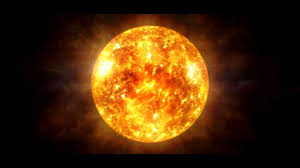
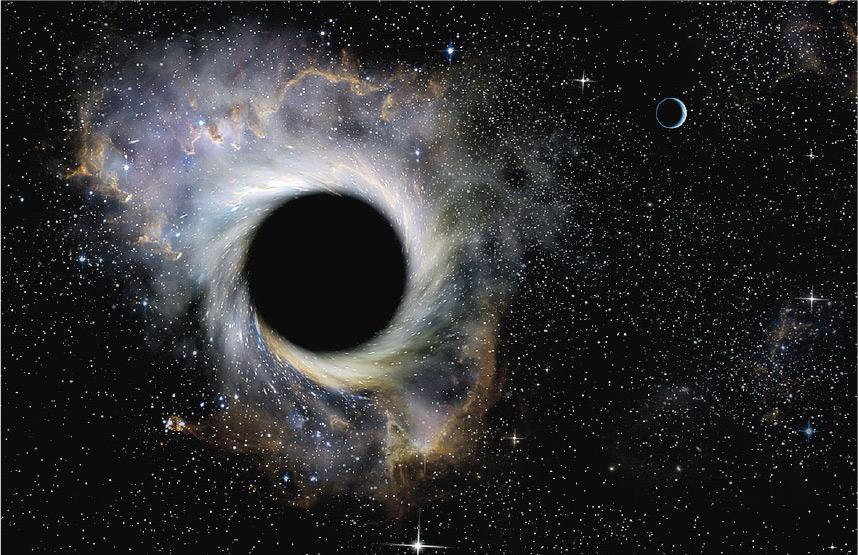

月亮是什麼？
月球是地球唯一的天然衛星，直徑約等於地球的四分之一，質量約為地球的1/81。它是相對於所環繞行星最大和最密的衛星之一。
月亮的起源
月球形成於約45億年前，最被普遍認可的起源假說是大碰撞說，認為月球來自地球與一顆火星大小天體的巨大撞擊。
月亮的重要特徵
- 自轉與公轉同步：永遠以同一面朝向地球。
- 表面特徵：包括火山熔岩海、高地和隕石坑。
- 與地球的距離：約為地球直徑的30倍。
人類探測月球
月球是唯一人類曾經登陸的地外星球。1969年阿波羅11號首次載人登月，至1972年共有六次成功登月。
月球的未來探索
包括美國的阿耳忒彌斯計畫和中國的載人月球探測工程等，計畫重新載人探測月球。

太陽是什麼？
太陽是位於太陽系中心的恆星，它是一個近乎完美的熱電漿理想球體，透過核心的核融合反應加熱到白熾。
太陽的重要性
- 主要以可見光、紫外線和紅外線的形式輻射能量，是地球上生命最重要的能量來源。
- 每秒將約6億噸氫融合成氦，產生光和熱。
太陽的基本特徵
- 半徑：約695,000公里，為地球半徑的109倍。
- 質量：約為地球的330,000倍，佔太陽系總質量的99.86%。
- 組成：約73%為氫，25%為氦，其餘為氧、碳、氖、鐵等重元素。
太陽的未來
太陽將在約50億年後膨脹為紅巨星，可能吞噬水星和金星，並使地球無法居住。最終，太陽將成為一顆緻密的白矮星。
文化與曆法中的太陽
自史前時代以來，太陽的巨大影響便被認可，並在許多文化中被視為神。現代曆法，如公曆，基於太陽運動。

黑洞是什麼？
黑洞是一種類星體，具有極大的重力，導致包括光在內的所有物質和輻射都無法逃逸。這是一個時空中的極端區域，其邊界被稱為事件視界。
黑洞的形成
黑洞通常在恆星生命週期的末期因重力坍縮形成，或者通過吸收其他物質和合併形成超大質量黑洞。
黑洞的觀測特徵
- 吸積盤：圍繞黑洞的高速旋轉物質形成的扁平結構，產生強烈的X射線輻射。
- 重力波：黑洞合併時產生的空間波動，可被先進的設備如LIGO探測到。
黑洞的科學突破
2019年，天文學家使用事件視界望遠鏡拍攝了首張黑洞的影像，確認了M87星系中心的超大質量黑洞。